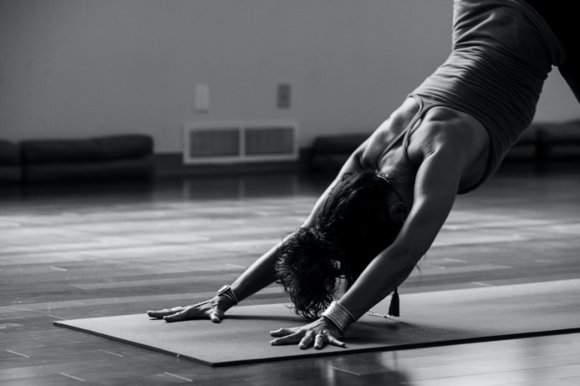
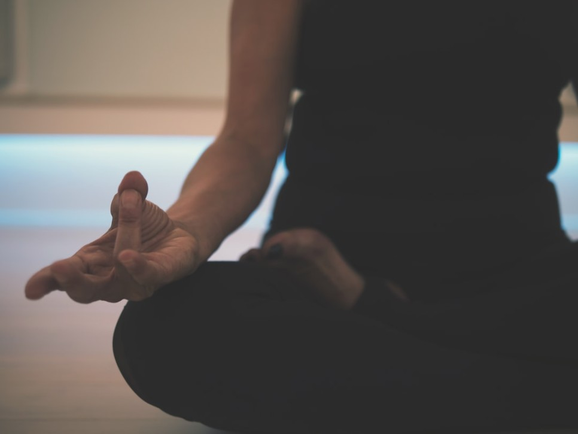

The type of Meditation
The advantage of meditation is that it does not require special space or equipment, and it is characterized by being able to do it anytime, anywhere.
In addition, you can achieve multiple benefits in just a few minutes of investment instead of a lot of time.
You don't have to sit cross-legged in the meditation position, and you can proceed for as long as you want in a comfortable position.
There are many ways to meditate, but I'll introduce you to a representative method that can be easily applied in everyday life.
Yoga
Unexpectedly, yoga can also be included in the category of meditation.
It has the advantage of being able to focus easily on your body and mind in a hectic day while maintaining physical balance rather than moving violently
It has the advantage of being able to focus easily on your body and mind in a hectic day while maintaining physical balance rather than moving violently
Intensive meditation
Unlike general meditation, which closes its eyes and reflects on its inner side, it is a method of meditating using the five senses such as natural images, sounds, and smells through specific media (external factors).
It is common to proceed as a group or program, and it will be conducted according to the media and people's guide.
It is common to proceed as a group or program, and it will be conducted according to the media and people's guide.
Matra Meditation
Unlike the above meditation, it is meditation that focuses on the inside.
The key is to think about certain words, phrases, and clauses over and over again, and to take a passive attitude without responding to any external factors.
The key is to think about certain words, phrases, and clauses over and over again, and to take a passive attitude without responding to any external factors.
Insight meditation

Insight meditation is characterized by focusing on how you feel at the moment, but not giving much meaning to it.
For example, if anger is soaring, it is to feel pure anger as it is, not thinking with the brain, such as the cause and solution of anger.
Insight meditation is so comprehensive that there are no specific guidelines.
For example, if anger is soaring, it is to feel pure anger as it is, not thinking with the brain, such as the cause and solution of anger.
Insight meditation is so comprehensive that there are no specific guidelines.